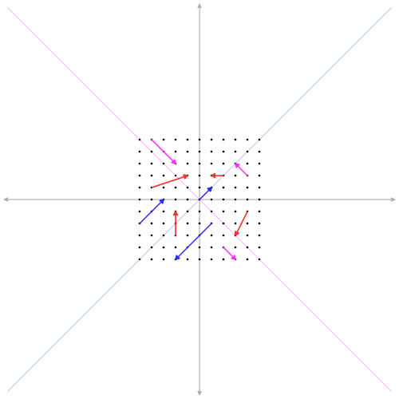

High Performance Linear Algebra
Sam Halliday
Scala eXchange December 2014
TL;DR
- Four Decades of Free and Open Source Software, collaboration between industry and academia: high performance linear algebra (netlib), available in Scala (Breeze).
- Not Invented Here: lukewarm performance, poor precision, dangerous results.
Linear Algebra
Definition
- A Ring is a set with multiplication and addition.
- A Field is a ring where multiplication is commutative (\(a.b = b.a\)) and nonzero elements have an inverse (\(a.a^{-1} = 1\)).
- A Vector Space has elements from a Field (scalars) and a set (vectors) with vector addition (\(v + m\)) and scaling (\(\alpha . b\))
- A Basis of vectors \({v_1, v_2, \ldots, v_n}\) defines a coordinate system under which all other vectors can be represented: \(a_1 v_1 + a_2 v_2 + \ldots + a_n v_n\)
- A Matrix encodes mappings between bases
Diagonalisation
- \(D = P^{-1} A P\)
- \(D_{ij} = \delta_{ij}\lambda_i\)
- \(AP = DP\)
- \(A v_k = \lambda v_k\)

Example: Kalman Filter
\[ \mathbf{x}_{k} = \mathbf{F}_{k} \mathbf{x}_{k-1} + \mathbf{B}_{k} \mathbf{u}_{k} + \mathbf{w}_{k} \]
- \(\mathbf{x}_k\) is the state of the system at time slice \(k\)
- \(\mathbf{F}_k\) is the state transition model
- \(\mathbf{B}_k\) is the control-input model (applied to control vector \(\mathbf{u}_k\))
- \(\mathbf{w}_k\) is the process noise, covariance \(\mathbf{Q}_k\)
- observations \(\mathbf{z}_k\) are made of the true state \(\mathbf{x}_k\) according to
- \(\mathbf{z}_k = \mathbf{H}_{k} \mathbf{x}_k + \mathbf{v}_k\)
- \(\mathbf{H}_k\) is the observation model and \(\mathbf{v}_k\) is the observation noise (covariance \(\mathbf{R}_k\))
Example: PCA
- \(\sigma_A^2 = \frac 1 n \sum_i^n a_i^2\)
- \(\sigma_B^2 = \frac 1 n \sum_i^n b_i^2\)
- \(\sigma_{AB}^2 = \frac 1 n \sum_i^n a_i b_i = \frac 1 n a b^T\)
- Data Matrix \(X\)
- all samples for one type of measurement per row
- different measure in each column
- all entries are diffs to the mean vector
- \(C_x = \frac 1 n X X^T\)
- \(Y = PX\)
- \(C_y = P C_x P^T\)
- find \(P\) such that:
- \(C_{ii}\) is maximised
- \(C_{ij}\) is minimised \(i \neq j\)
\[ \begin{eqnarray*} C_y &=& P C_x P^T \\ &=& P P^{-1} D P P^T \\ &=& D \end{eqnarray*} \]
SVD
- \(X = U \Sigma V^T\)
- \(U\) is orthogonal (rotation)
- \(\Sigma\) is diagonal (stretch)
- \(V\) is orthogonal (rotation)
- \(XX^T = (U \Sigma V^T) (U \Sigma V^T)^T = U \Sigma^2 U^T\)
- \(D^2 = C_y^2 = \Sigma\)
- \(U = P\) (recall \(Y = PX\))
Basic Implementation
Multiplication
\[ A=\begin{pmatrix} A_{11} & A_{12} & \cdots & A_{1m} \\ A_{21} & A_{22} & \cdots & A_{2m} \\ \vdots & \vdots & \ddots & \vdots \\ A_{n1} & A_{n2} & \cdots & A_{nm} \\ \end{pmatrix} \qquad B=\begin{pmatrix} B_{11} & B_{12} & \cdots & B_{1p} \\ B_{21} & B_{22} & \cdots & B_{2p} \\ \vdots & \vdots & \ddots & \vdots \\ B_{m1} & B_{m2} & \cdots & B_{mp} \\ \end{pmatrix} \]
\[ (A B)_{ij} = \sum_{k=1}^m A_{ik}B_{kj} \]
\[ \small \begin{pmatrix} \boldsymbol a & \boldsymbol b & \boldsymbol c \\ . & . & . \\ . & . & . \\ \end{pmatrix} \begin{pmatrix} \boldsymbol r & . & . \\ \boldsymbol u & . & . \\ \boldsymbol x & . & . \\ \end{pmatrix} = \begin{pmatrix} \boldsymbol \alpha & . & . \\ . & . & . \\ . & . & . \\ \end{pmatrix} \\[25pt] \begin{pmatrix} . & . & . \\ \boldsymbol d & \boldsymbol e & \boldsymbol f \\ . & . & . \\ \end{pmatrix} \begin{pmatrix} \boldsymbol r & . & . \\ \boldsymbol u & . & . \\ \boldsymbol x & . & . \\ \end{pmatrix} = \begin{pmatrix} . & . & . \\ \boldsymbol \delta & . & . \\ . & . & . \\ \end{pmatrix} \\[25pt] \begin{pmatrix} . & . & . \\ \boldsymbol d & \boldsymbol e & \boldsymbol f \\ . & . & . \\ \end{pmatrix} \begin{pmatrix} . & \boldsymbol s & . \\ . & \boldsymbol v & . \\ . & \boldsymbol y & . \\ \end{pmatrix} = \begin{pmatrix} . & . & . \\ . & \boldsymbol \epsilon & . \\ . & . & . \\ \end{pmatrix} \]
Immutable
case class ImmutableMatrix(
numRows: Int,
numCols: Int,
data: Vector[Vector[Double]]
) {
def mult(that: ImmutableMatrix): ImmutableMatrix = {
require(numCols == that.numRows)
val res = Array.fill(numRows, that.numCols)(0.0)
for {
i <- 0 until numRows
j <- 0 until that.numCols
k <- 0 until numCols
} {
res(i)(j) = data(i)(k) * that.data(k)(j)
}
ImmutableMatrix(numRows, numCols, ImmutableMatrix.arrayToVec(res))
}
}Naive
trait Matrix {
def numRows: Int
def numCols: Int
def set(row: Int, col: Int, value: Double): Unit
def get(row: Int, col: Int): Double
def mult(that: Matrix): Matrix
}
class NaiveMatrix (
val numRows: Int,
val numCols: Int,
val values: Array[Array[Double]]
) extends Matrix {
def set(row: Int, col: Int, value: Double): Unit =
values(row)(col) = value
def get(row: Int, col: Int): Double = values(row)(col) def mult(that: Matrix): Matrix = {
val res = NaiveMatrix(numRows, that.numCols)
for {
i <- 0 until numRows
j <- 0 until that.numCols
k <- 0 until numCols
} {
val update = this.get(i, k) * that.get(k, j)
res.set(i, j, res.get(i, j) + update)
}
res
}
}Naive Parallel
trait NaiveParallelMatrix {
this: NaiveMatrix =>
override def mult(that: Matrix): Matrix = {
val res = NaiveMatrix(numRows, that.numCols)
for {
i <- (0 until numRows).par
j <- (0 until that.numCols).par
k <- 0 until numCols
} {
val update = this.get(i, k) * that.get(k, j)
res.set(i, j, res.get(i, j) + update)
}
res
}
}Allocation
While Loops
trait NaiveWhileMatrix {
this: NaiveMatrix =>
override def mult(that: Matrix): Matrix = {
val res = NaiveMatrix(numRows, that.numCols)
var i, j, k = 0
while (i < numRows) {
j = 0
while (j < that.numCols) {
k = 0
var sum = 0.0
while (k < numCols) {
sum += this.get(i, k) * that.get(k, j)
k += 1
}
res.set(i, j, sum)
j += 1
}
i += 1
}
res
}
}Comparison
NETLIB
netlib.org
BLAS
| Level | Name | Operation |
|---|---|---|
| 1 | xAXPY |
\(y \leftarrow \alpha x + y\) |
| 1 | xDOT |
\(dot \leftarrow x^T y\) |
| 1 | ... | |
| 2 | xGEMV |
\(y \leftarrow \alpha A x + \beta y\) |
| 2 | xTRSV |
\(T \boldsymbol x = y\) |
| 2 | ... | |
| 3 | xGEMM |
\(C \leftarrow \alpha A B + \beta C\) |
| 3 | xTRSM |
\(T \boldsymbol B = \alpha \boldsymbol B\) |
| 3 | ... |
Reference DGEMM
* Form C := alpha*A*B + beta*C
DO 90 J = 1,N
IF (BETA.EQ.ZERO) THEN
DO 50 I = 1,M
C(I,J) = ZERO
50 CONTINUE
ELSE IF (BETA.NE.ONE) THEN
DO 60 I = 1,M
C(I,J) = BETA*C(I,J)
60 CONTINUE
END IF
DO 80 L = 1,K
IF (B(L,J).NE.ZERO) THEN
TEMP = ALPHA*B(L,J)
DO 70 I = 1,M
C(I,J) = C(I,J) + TEMP*A(I,L)
70 CONTINUE
END IF
80 CONTINUE
90 CONTINUELAPACK
dbdsdc dbdsqr ddisna dgbbrd dgbcon dgbequ dgbequb dgbrfs dgbrfsx dgbsv
dgbsvx dgbsvxx dgbtrf dgbtrs dgebak dgebal dgebrd dgecon dgeequ
dgeequb dgees dgeesx dgeev dgeevx dgehrd dgejsv dgelqf dgels dgelsd
dgelss dgelsy dgeqlf dgeqp3 dgeqpf dgeqrf dgeqrfp dgerfs dgerfsx
dgerqf dgesdd dgesv dgesvd dgesvj dgesvx dgesvxx dgetrf dgetri dgetrs
dggbak dggbal dgges dggesx dggev dggevx dggglm dgghrd dgglse dggqrf
dggrqf dggsvd dggsvp dgtcon dgtrfs dgtsv dgtsvx dgttrf dgttrs dhgeqz
dhsein dhseqr dopgtr dopmtr dorgbr dorghr dorglq dorgql dorgqr dorgrq
dorgtr dormbr dormhr dormlq dormql dormqr dormrq dormrz dormtr dpbcon
dpbequ dpbrfs dpbstf dpbsv dpbsvx dpbtrf dpbtrs dpftrf dpftri dpftrs
dpocon dpoequ dpoequb dporfs dporfsx dposv dposvx dposvxx dpotrf
dpotri dpotrs dppcon dppequ dpprfs dppsv dppsvx dpptrf dpptri dpptrs
dpstrf dptcon dpteqr dptrfs dptsv dptsvx dpttrf dpttrs dsbev dsbevd
dsbevx dsbgst dsbgv dsbgvd dsbgvx dsbtrd dsfrk dspcon dspev dspevd
dspevx dspgst dspgv dspgvd dspgvx dsprfs dspsv dspsvx dsptrd dsptrf
dsptri dsptrs dstebz dstedc dstegr dstein dstemr dsteqr dsterf dstev
dstevd dstevr dstevx dsycon dsyequb dsyev dsyevd dsyevr dsyevx dsygst
dsygv dsygvd dsygvx dsyrfs dsyrfsx dsysv dsysvx dsysvxx dsytrd dsytrf
dsytri dsytrs dtbcon dtbrfs dtbtrs dtfsm dtftri dtfttp dtfttr dtgevc
dtgexc dtgsen dtgsja dtgsna dtgsyl dtpcon dtprfs dtptri dtptrs dtpttf
dtpttr dtrcon dtrevc dtrexc dtrrfs dtrsen dtrsna dtrsyl dtrtri dtrtrs
dtrttf dtrttp dtzrzf dsgesv dsposv
DGETRF
\[ LP^{-1}U = A \]
Optional: Solving with LU
- \(Ax=b\)
- \(PA = LU\)
- \(LUx = Pb\)
- \(Ly = Pb\)
- \(Ux = y\)
\[ \begin{matrix} l_{1,1} x_1 & & & & & = & b_1 \\ l_{2,1} x_1 & + & l_{2,2} x_2 & & & = & b_2 \\ \vdots & & \vdots & \ddots & & & \vdots \\ l_{m,1} x_1 & + & l_{m,2} x_2 & + \dotsb + & l_{m,m} x_m & = & b_m \\ \end{matrix} \]
\[ x_1 = \frac{b_1}{l_{1,1}} \\ x_2 = \frac{b_2 - l_{2,1} x_1}{l_{2,2}} \\ x_m = \frac{b_m - \sum_{i=1}^{m-1} l_{m,i}x_i}{l_{m,m}} \\ \]
C API
#include "cblas.h"
void cblas_dgemm(const enum CBLAS_ORDER Order, const enum CBLAS_TRANSPOSE TransA,
const enum CBLAS_TRANSPOSE TransB, const int M, const int N,
const int K, const double alpha, const double *A,
const int lda, const double *B, const int ldb,
const double beta, double *C, const int ldc) {
...
if( Order == CblasColMajor ) {
if(TransA == CblasTrans) TA='T';
else if ( TransA == CblasConjTrans ) TA='C';
else if ( TransA == CblasNoTrans ) TA='N';
else ...
if(TransB == CblasTrans) TB='T';
else if ( TransB == CblasConjTrans ) TB='C';
else if ( TransB == CblasNoTrans ) TB='N';
else ...
#ifdef F77_CHAR
F77_TA = C2F_CHAR(&TA);
F77_TB = C2F_CHAR(&TB);
#endif
F77_dgemm(F77_TA, F77_TB, &F77_M, &F77_N, &F77_K, &alpha, A,
&F77_lda, B, &F77_ldb, &beta, C, &F77_ldc);
} else if (Order == CblasRowMajor) { ...Precision and Stability
Kinds of Error
- roundoff error
- input error
- machine precision: \(\epsilon\)
Types of Structures
- Scalar, numbers, e.g. an eigenvalue
- Vector, e.g. the solution \(x\) of system \(Ax=b\)
- Matrix, e.g. matrix inverse \(A^{-1}\)
- Subspace, e.g. space spanned by eigenvectors
Relative Errors
- \(\hat{\alpha} \approx \alpha\)
- \(\vert \hat{\alpha} - \alpha \vert\)
- \(\vert \hat{\alpha} - \alpha \vert / \vert \alpha \vert\)
- \(\vert \hat{\alpha} - \alpha \vert / \vert \hat{\alpha} \vert\)
- \(10^{-5}\epsilon\) "5 decimal digits"
Norms
| Name | Vector | Matrix |
|---|---|---|
| 1-norm | \(\Vert x\Vert _{1} = \sum_i \vert x_i\vert\) | \(\Vert A\Vert _{1} = \max_j \sum_i \vert a_{ij}\vert\) |
| 2-norm | \(\Vert x\Vert _2 = ( \sum_i \vert x_i\vert^2 )^{1/2}\) | \(\Vert A\Vert _2 = \max_{x \neq 0} \Vert Ax\Vert _2 / \Vert x\Vert _2\) |
| Frobenius | \(\Vert x \Vert_F = \Vert x \Vert_2\) | \(\Vert A\Vert _F = ( \sum_{ij} \vert a_{ij}\vert^2 )^{1/2}\) |
| \(\infty\) norm | \(\Vert x\Vert _{\infty} = \max_i \vert x_i\vert\) | \(\Vert A\Vert _{\infty} = \max_i \sum_j \vert a_{ij}\vert\) |
Condition Number
\[ A = \left( \begin{array}{ccc} 1 & 2 & 3 \\ 4 & 5 & 6 \\ 7 & 8 & 10 \end{array} \right) \qquad A^{-1} \approx \left( \begin{array}{ccc} -.667 & -1.333 & 1 \\ -.667 & 3.667 & -2 \\ 1 & -2 & 1 \end{array} \right) \]
\[\kappa_{\infty}(A) = 158.33\]
LAPACK RCOND(A) \(\approx \frac 1 {\kappa_\infty}\)
Example
\[ Ax = b \\ A = \left( \begin{array}{ccc} 4 & 16000 & 17000 \\ 2 & 5 & 8 \\ 3 & 6 & 10 \end{array}\right) \qquad b = \left( \begin{array}{c} 100.1 \\ .1 \\ .01 \end{array}\right) \]
ANORM = SLANGE( 'I', N, N, A, LDA, WORK )
CALL SGESV( N, 1, A, LDA, IPIV, B, LDB, INFO )
CALL SGECON( 'I', N, A, LDA, ANORM, RCOND, WORK, IWORK, INFO )
ERRBD = EPSMCH / RCONDSGESV ERRBD\(= 1.5\cdot 10^{-2}\)- true error \(= 1.5\cdot 10^{-3}\)
SGESVX FERR\(= 3.0 \cdot 10^{-5}\)- true error \(4.3 \cdot 10^{-7}\)
Hardware Support
\(y = a * x + b\)
| Mnemonic | Operands | Operation |
|---|---|---|
| VFMADD132SD | xmm,xmm,xmm/m64 | $0=$0$2+$1 |
| VFMADD213SD | xmm,xmm,xmm/m64 | $0=$1$0+$2 |
| VFMADD231SD | xmm,xmm,xmm/m64 | $0=$1$2+$0 |
Bottleneck
Read and Write
requestStart = currentTimeNanos();
double* b = calloc(length, sizeof(double));
for (i = 0 ; i < m ; i++) {
c = i * m;
for (j = 0 ; j < m ; j ++) {
#ifdef READ_COL
for (k = 0 ; k < m ; k++) {
tmp = a[c + k];
}
b[c + j] = tmp;
#else
b[c + j] = a[c + j];
#endif
}
}
requestEnd = currentTimeNanos();Timings
CPU Architecture

CPU Cycles
| FADD | FMUL | FDIV | FSQRT | |
|---|---|---|---|---|
| 80287 | 80 | 120 | 200 | 180 |
| 80387 | 30 | 45 | 90 | 125 |
| 80486 | 15 | 16 | 73 | 85 |
| Pentium | 2 | 2 | 39 | 70 |
| Pentium II | 2 | 4 | 25 | 35 |
| Pentium 4 | 3 | 5 | 30 | 30 |
| ... | ... | ... | ... | ... |
| i7 | \(\frac 1 {32}\) | \(\frac 1 {32}\) | \(\frac 1 {32}\) | \(\frac 1 {32}\) |
Latency
| Computer | Human Timescale | Human Analogy |
|---|---|---|
| L1 cache reference | 0.5 secs | One heart beat |
| Branch mispredict | 5 secs | Yawn |
| L2 cache reference | 7 secs | Long yawn |
| Mutex lock/unlock | 25 secs | Making a cup of tea |
| Main memory reference | 100 secs | Brushing your teeth |
| Compress 1K bytes with Zippy | 50 min | Scala compiler CI pipeline |
| Send 2K bytes over 1Gbps network | 5.5 hr | Train London to Edinburgh |
| SSD random read | 1.7 days | Weekend |
| Read 1MB sequentially from memory | 2.9 days | Long weekend |
| Round trip within same datacenter | 5.8 days | Short holiday |
| Read 1MB sequentially from SSD | 11.6 days | Holiday |
| Disk seek | 16.5 weeks | Term of university |
| Read 1MB sequentially from disk | 7.8 months | Fully paid maternity in Norway |
| Send packet CA->Netherlands->CA | 4.8 years | Government's term |
Machine Optimised
Intel
Parallel Studio
| Cluster | Professional | Composer | |
|---|---|---|---|
| Named User | $2,949 ($1,049) | $2,299 ($799) | $1,449 ($499) |
| 2 Floating Users | $14,749 ($5,199) | $11,499 ($4,049) | $5,099 ($1,799) |
| 5 Floating Users | $29,499 ($10,349) | $22,999 ($8,049) | $10,899 ($3,849) |
MKL Standalone
$499
AMD Core Math Library
Apple vecLib / Accelerate
$ ll /usr/lib/lib{blas, lapack}.dylib
/usr/lib/libblas.dylib -> /System/Library/Frameworks/vecLib.framework/Versions/A/libBLAS.dylib
/usr/lib/liblapack.dylib -> /System/Library/Frameworks/vecLib.framework/Versions/A/libLAPACK.dylib
$ tree /System/Library/Frameworks/vecLib.framework/Versions/Current/
_CodeSignature
CodeResources
libBLAS.dylib
libLAPACK.dylib
libvDSP.dylib
libvMisc.dylib
Resources
English.lproj
InfoPlist.strings
Info.plist
version.plist
vecLib
ATLAS
- compiler flags - free wins
- parameterisation
- cache edges - how much to attempt in kernels?
- copy - matrix data can be rearranged optimally
- multiple implementations of the same function
- Fred's loop is faster than Bob's on your machine
- code generation
- inline on steroids
cat /usr/share/doc/libatlas3-base/README.Debian
for A in /sys/devices/system/cpu/cpu*/cpufreq/scaling_governor
do sudo sh -c "echo performance > $A"
done
cat /sys/devices/system/cpu/cpu*/cpufreq/scaling_governor
sudo apt-get source atlas
sudo apt-get build-dep atlas
sudo apt-get install devscripts
cd atlas-*
fakeroot debian/rules custom
sudo dpkg -i ../libatlas*.deb
sudo update-alternatives --config libblas.so.3
sudo update-alternatives --config liblapack.so.3
GotoBLAS / OpenBLAS
$ ls OpenBLAS/kernel/x86_64/*dgemm*
dgemm_kernel_16x2_haswell.S dgemm_kernel_6x4_piledriver.S
dgemm_ncopy_2.S dgemm_ncopy_8.S dgemm_tcopy_8_bulldozer.S
dgemm_kernel_4x4_haswell.S dgemm_kernel_8x2_bulldozer.S
dgemm_ncopy_4.S dgemm_tcopy_2.S dgemm_tcopy_8.S
dgemm_kernel_4x8_sandy.S dgemm_kernel_8x2_piledriver.S
dgemm_ncopy_8_bulldozer.S dgemm_tcopy_4.S
DGEMM Benchmarks
requestStart = currentTimeNanos();
double* c = calloc(m * m, sizeof(double));
cblas_dgemm(CblasColMajor, CblasNoTrans, CblasNoTrans, m, m, m, 1, a, m, b, m, 0, c, m);
requestEnd = currentTimeNanos();LD_LIBRARY_PATH=. ./dgemmtest > ../R/netlib-ref.csv
LD_LIBRARY_PATH=/usr/lib/atlas-base ./dgemmtest > ../R/atlas.csv
LD_LIBRARY_PATH=/usr/lib/openblas-base ./dgemmtest > ../R/openblas.csv
LD_LIBRARY_PATH=/opt/acml5.3.1/gfortran64_mp/lib/:. ./dgemmtest > ../R/acml.csv
LD_LIBRARY_PATH=/opt/intel/mkl/lib/intel64:. ./dgemmtest > ../R/intel.csv
DGEMM Comparison
netlib-java
Fortran to ...
IF( UPPER )THEN
DO 70, J = 1, N
DO 60, I = 1, M
TEMP1 = ALPHA*B( I, J )
TEMP2 = ZERO
DO 50, K = 1, I - 1
C( K, J ) = C( K, J ) + TEMP1 *A( K, I )
TEMP2 = TEMP2 + B( K, J )*A( K, I )
50 CONTINUE
IF( BETA.EQ.ZERO )THEN
C( I, J ) = TEMP1*A( I, I ) + ALPHA*TEMP2
ELSE
C( I, J ) = BETA *C( I, J ) +
$ TEMP1*A( I, I ) + ALPHA*TEMP2
END IF
60 CONTINUE
70 CONTINUE... Java
if (upper) {
forloop70: for (j = 1; j <= n; j++) {
forloop60: for (i = 1; i <= m; i++) {
temp1 = alpha * b[(i) - 1 + (j - 1) * ldb + _b_offset];
temp2 = zero;
forloop50: for (k = 1; k <= i - 1; k++) {
c[(k) - 1 + (j - 1) * Ldc + _c_offset] = c[(k) - 1 + (j - 1) * Ldc + _c_offset] + temp1 * a[(k) - 1 + (i - 1) * lda + _a_offset];
temp2 = temp2 + b[(k) - 1 + (j - 1) * ldb + _b_offset] * a[(k) - 1 + (i - 1) * lda + _a_offset];
Dummy.label("Dsymm", 50);
}
if (beta == zero) {
c[(i) - 1 + (j - 1) * Ldc + _c_offset] = temp1 * a[(i) - 1 + (i - 1) * lda + _a_offset] + alpha * temp2;
} else {
c[(i) - 1 + (j - 1) * Ldc + _c_offset] = beta * c[(i) - 1 + (j - 1) * Ldc + _c_offset] + temp1 * a[(i) - 1 + (i - 1) * lda + _a_offset] + alpha * temp2;
}
Dummy.label("Dsymm", 60);
}
Dummy.label("Dsymm", 70);
}
}API Generator
abstract class BLAS {
...
/**
* ... original docs here ...
*/
abstract public void dgemm(
String transa,
String transb,
int m,
int n,
int k,
double alpha,
double[] a,
int lda,
double[] b,
int ldb,
double beta,
double[] c,
int Ldc
);
...
}Regex Digression
StringBuilder regex = new StringBuilder();
regex.append(format(">\\Q%s\\E</A></(?:B|strong)>\\(", name));
for (Class klass : types) {
regex.append(format(
",?\\s*(?:<A[^>]+>)?[\\w.]*\\Q%s\\E(?:</A>)?(?:<[^&]+>)? ([^),\\s]+)",
klass.getSimpleName()
));
}
regex.append(format("\\)</CODE>"));
Pattern pattern = Pattern.compile(regex.toString(), MULTILINE | CASE_INSENSITIVE);
Matcher matcher = pattern.matcher(raw);Implementations
F2jBLAS
@Override
public void dgemm(
String transa, String transb, int m, int n, int k,
double alpha, double[] a, int lda,
double[] b, int ldb, double beta, double[] c, int Ldc
) {
org.netlib.blas.Dgemm.dgemm(
transa, transb, m, n, k, alpha, a, 0, lda, b, 0, ldb, beta, c, 0, Ldc
);
}NativeRefBLAS and NativeSystemBLAS
@Override
public native void dgemm(
String transa, String transb, int m, int n, int k,
double alpha, double[] a, int lda,
double[] b, int ldb, double beta,
double[] c, int Ldc
);JNI
JNIEXPORT void JNICALL Java_com_github_fommil_netlib_NativeSystemBLAS_dgemm (JNIEnv * env, jobject calling_obj, jstring transa, jstring transb, jint m, jint n, jint k, jdouble alpha, jdoubleArray a, jint lda, jdoubleArray b, jint ldb, jdouble beta, jdoubleArray c, jint Ldc) {
char * jni_transa = (char *)(*env)->GetStringUTFChars(env, transa, JNI_FALSE);
char * jni_transb = (char *)(*env)->GetStringUTFChars(env, transb, JNI_FALSE);
jdouble * jni_a = NULL;
if (a != NULL) {
jni_a = (*env)->GetPrimitiveArrayCritical(env, a, JNI_FALSE);
check_memory(env, jni_a);
}
jdouble * jni_b = NULL;
if (b != NULL) {
jni_b = (*env)->GetPrimitiveArrayCritical(env, b, JNI_FALSE);
check_memory(env, jni_b);
}
jdouble * jni_c = NULL;
if (c != NULL) {
jni_c = (*env)->GetPrimitiveArrayCritical(env, c, JNI_FALSE);
check_memory(env, jni_c);
}
cblas_dgemm(CblasColMajor, getCblasTrans(jni_transa), getCblasTrans(jni_transb), m, n, k, alpha, jni_a, lda, jni_b, ldb, beta, jni_c, Ldc);
if (c != NULL) (*env)->ReleasePrimitiveArrayCritical(env, c, jni_c, 0);
if (b != NULL) (*env)->ReleasePrimitiveArrayCritical(env, b, jni_b, 0);
if (a != NULL) (*env)->ReleasePrimitiveArrayCritical(env, a, jni_a, 0);
(*env)->ReleaseStringUTFChars(env, transb, jni_transb);
(*env)->ReleaseStringUTFChars(env, transa, jni_transa);
}Maven Native
<plugin>
<groupId>org.codehaus.mojo</groupId>
<artifactId>native-maven-plugin</artifactId>
<configuration>
<javahVerbose>true</javahVerbose>
<javahClassNames>
<javahClassName>com.github.fommil.netlib.NativeSystemBLAS</javahClassName>
</javahClassNames>
<compilerStartOptions>
<compilerStartOption>-O3</compilerStartOption>
</compilerStartOptions>
<sources>
<source>
<directory>${project.build.directory}/netlib-native</directory>
<includes>
<include>*.c</include>
</includes>
...JNILoader
public class NativeSystemBLAS extends com.github.fommil.netlib.F2jBLAS {
static {
String jnilib = com.github.fommil.jni.JniNamer.getJniName("netlib-native_system");
String natives = System.getProperty("com.github.fommil.netlib.NativeSystemBLAS.natives", jnilib);
com.github.fommil.jni.JniLoader.load(natives.split(","));
}
...
}Performance
Scala API
Breeze
libraryDependencies ++= Seq(
"org.scalanlp" %% "breeze" % "0.10",
"org.scalanlp" %% "breeze-natives" % "0.10"
)Nov 30, 2014 6:42:51 PM com.github.fommil.jni.JniLoader liberalLoad
INFO: successfully loaded /tmp/jniloader7150057786941522144netlib-native_system-linux-x86_64.so
scala> import breeze.linalg._
scala> val x = DenseVector.zeros[Double](5)
x: DenseVector[Double] = DenseVector(0.0, 0.0, 0.0, 0.0, 0.0)
scala> x.t
res1: Transpose[DenseVector[Double]] = Transpose(DenseVector(0.0, 0.0, 0.0, 0.0, 0.0))scala> val m = DenseMatrix.zeros[Int](5,5)
m: DenseMatrix[Int] =
0 0 0 0 0
0 0 0 0 0
0 0 0 0 0
0 0 0 0 0
0 0 0 0 0
scala> (m.rows, m.cols)
(Int, Int) = (5,5)
scala> m(::,1)
DenseVector[Int] = DenseVector(0, 0, 0, 0, 0)
scala> m(4,::) := DenseVector(1,2,3,4,5).t
DenseMatrix[Int] = 1 2 3 4 5
scala> m
DenseMatrix[Int] =
0 0 0 0 0
0 0 0 0 0
0 0 0 0 0
0 0 0 0 0
1 2 3 4 5| Operation | Example |
|---|---|
| Elementwise addition | a + b |
| Elementwise multiplication | a :* b |
| Vector dot product | a dot b |
| Elementwise sum | sum(a) |
| Elementwise max | a.max |
| Elementwise argmax | argmax(a) |
| Linear solve | a b |
| Transpose | a.t |
| Determinant | det(a) |
| Inverse | inv(a) |
| Pseudoinverse | pinv(a) |
| SVD | SVD(u,s,v) = svd(a) |
Example: Canon Ball
val dt = 0.1
val g = 9.8
def I = DenseMatrix.eye[Double](4)
val B = DenseMatrix(
(0.0, 0.0, 0.0, 0.0),
(0.0, 0.0, 0.0, 0.0),
(0.0, 0.0, -1.0, 0.0),
(0.0, 0.0, 0.0, -1.0)
)
val u = DenseVector(0, 0, g * t * t, g * t)
val F = DenseMatrix(
(1.0, dt, 0.0, 0.0),
(0.0, 1.0, 0.0, 0.0),
(0.0, 0.0, 1.0, dt),
(0.0, 0.0, 0.0, 1.0)
)
val H = I
val Q = DenseMatrix.zeros[Double](4, 4)
val R = I * 0.2
// guess of state and variance
var s = DenseVector.zeros[Double](4)
var P = I while (x(2) >= 0) {
// measurement
def noisy(actual: Double) = actual + Random.nextGaussian * 50
val z = x.mapValues(noisy)
// actual simulation
x = F * x + B * u
t += dt
// prediction step
val predS = F * s + B * u
val predP = F * P * F.t + Q
// observation step
val innov = z - H * predS
val innov_cov = H * predP * H.t + R
// update step
val gain = predP * H.t * inv(innov_cov)
s = predS + gain * innov
P = (I - gain * H) * predP
}
Example: PCA
val jpg = ImageIO.read(file("input.jpg"))
val orig = imageToMatrix(jpg)
val svd.SVD(u, s, v) = svd(orig)
for {
i <- 1 until u.cols
if i <= 100 // no discernable difference beyond!
} {
val compressed = u(::, 0 until i) * diag(s(0 until i)) * v(0 until i, ::)
val out = f"compressed-$i%03d.bmp"
val converted = matrixToImage(compressed)
ImageIO.write(converted, "BMP", file(out))
}